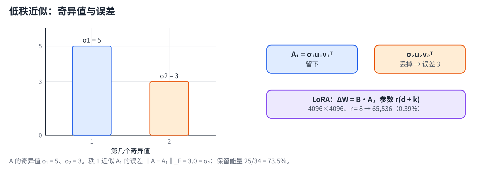
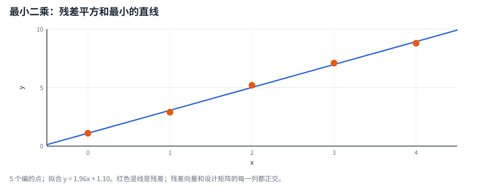
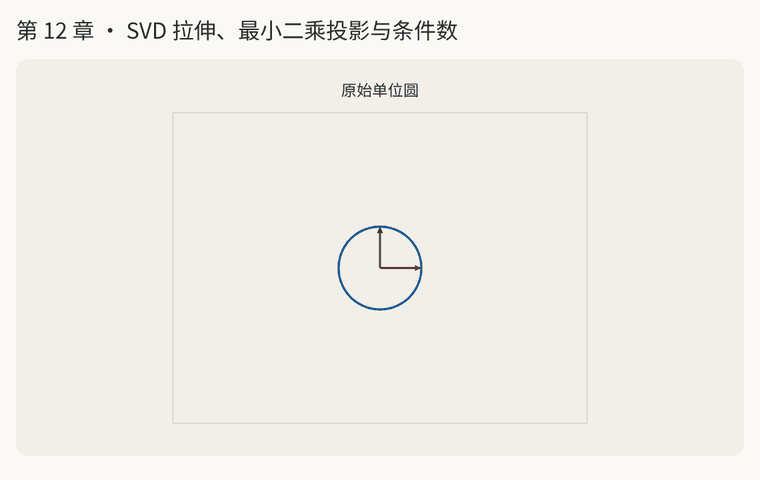

第 12 章 · 线代二：SVD、低秩近似与 LoRA、最小二乘、条件数
本地运行
git clone https://github.com/wikieden/math-and-eval-stats
cd math-and-eval-stats/code/notebooks
pip install jupyterlab torch numpy
jupyter lab ch12_svd_least_squares.ipynb也可以下载后直接用 VS Code 打开 .ipynb 运行。需要 GPU 的章节在 Colab 里选「代码执行程序 → 更改运行时类型 → GPU」。
本章回答：任何矩阵都能拆成"旋转 · 拉伸 · 旋转"吗？LoRA 为什么只用 0.4% 的参数就能微调一个大矩阵？拟合直线的"最小二乘"在几何上是什么？为什么有的方程组，输入差万分之一，答案就差十万八千里？
讲解日期：2026-11-25 · 上一章：第 11 章 线代一 · 下一章：第 13 章 多元微积分与自动微分
对应原文：MMLmaterials/text/books/mml-book.txt§3.8 正交投影 L4459 起（式 3.57 L4748–L4762）、§4.5 SVD L6504 起（定理 4.22 L6515）、§4.6 矩阵近似 L7116 起（Eckart–Young 定理 4.25 L7243）、§9.2 参数估计 L16143 起
本章缩写：SVD = Singular Value Decomposition（奇异值 / 分解）；σ（sigma）= 奇异值；U、V = 左、右奇异向量矩阵；‖·‖_F = Frobenius norm（弗罗贝尼乌斯范数：所有元素平方和开根号）；LoRA = Low-Rank Adaptation（低秩 / 适配）；κ（kappa）= condition number（条件数）；A⁺ = pseudo-inverse（伪逆）。全部缩写见 附录 · 缩写与术语表
讲解
第一步：SVD：任何矩阵 = 旋转 · 拉伸 · 旋转（2026-11-25）
类比：拍扁一个气球。 先把气球转到合适的角度（Vᵀ），沿几个互相垂直的方向压扁或拉长（Σ），再转到最后的朝向（U）。第 11 章的特征分解只对对称方阵成立；SVD 对任何形状的矩阵都成立。
（MML 定理 4.22，L6515）
例子：A = [[3, 2], [2, 3], [2, −2]]（3×2）：
| 算什么 | 结果 |
|---|---|
| 奇异值 | σ₁ = 5，σ₂ = 3 |
| AᵀA 的特征值 | 25、9（= σ²） |
| UΣVᵀ 还原误差 | 4.4 × 10⁻¹⁶ |
奇异值的平方就是 AᵀA 的特征值；V 的列是 AᵀA 的特征向量。
一句话：SVD 把任意矩阵拆成 UΣVᵀ = Σσᵢuᵢvᵢᵀ，奇异值是各方向的拉伸倍数。
第二步：低秩近似与 LoRA：只留最大的几个奇异值（2026-11-25）
类比：压缩一张照片，只留最主要的几层细节。
Eckart–Young 定理（MML 定理 4.25，L7243）：只留前 k 个奇异值得到的 \(A_k = \sum_{i\le k}\sigma_iu_iv_i^\top\)，是所有秩 ≤ k 的矩阵里离 A 最近的（Frobenius 范数和谱范数下都是），误差是被丢掉的奇异值：
例子：A 的秩 1 近似误差 ‖A − A₁‖_F = 3.0 = σ₂；保留的"能量" σ₁²/Σσ² = 25/34 = 0.735。
LoRA：微调一个 d × k 的权重时，不直接学完整的增量 ΔW，而是学两个瘦矩阵 B（d × r）和 A（r × k），ΔW = BA，秩最多 r（第 11 章第一步的外积看法：r 个秩 1 矩阵之和）。
| 参数量 | |
|---|---|
| 完整的 4096 × 4096 | 16,777,216 |
| LoRA r = 8 | 8 × (4096 + 4096) = 65,536（0.39%） |
LoRA 押的是"微调需要的改动本身是低秩的"。

图 12-1 · 左：A 的两个奇异值；右：秩 1 近似 A₁ 和原矩阵的误差正好是 σ₂一句话：截断 SVD 是最好的低秩近似，误差是丢掉的奇异值；LoRA 用 BA 只学秩 r 的增量，参数量 r(d + k)。
第三步：最小二乘 = 正交投影（2026-11-25）
类比：从一个点往墙上垂直地扔一块砖，砖落的位置是墙上离它最近的点。
方程比未知数多（5 个点拟合 2 个参数的直线）时一般没有精确解。最小二乘找 θ 让 \(\|y - X\theta\|^2\) 最小：
几何上，\(X\theta\) 是 y 在 X 的列空间上的正交投影（MML §3.8，式 3.57 L4748–L4762）：残差 \(r = y - X\theta\) 和 X 的每一列都垂直，\(X^\top r = 0\)。
例子（编的 5 个点：x = 0, 1, 2, 3, 4，y = 1.1, 2.9, 5.2, 7.1, 8.8）：
| 方法 | 斜率 | 截距 |
|---|---|---|
| 正规方程 | 1.96 | 1.10 |
| 伪逆 \(X^+y\) | 1.96 | 1.10 |
np.linalg.lstsq |
1.96 | 1.10 |
残差和两列都正交：Xᵀr = [0, 0]。
伪逆：\(A^+ = V\Sigma^+U^\top\)（Σ⁺ 把非零奇异值取倒数），对任何矩阵都有定义，列满秩时就是 \((A^\top A)^{-1}A^\top\)。

图 12-2 · 5 个点和拟合直线；竖线是残差，平方和最小一句话：最小二乘解是 y 在列空间上的正交投影，残差垂直于每一列；正规方程、伪逆、lstsq 给出同一个答案。
第四步：条件数：输入抖一点，答案抖多少（2026-11-25）
类比：用两根几乎平行的线确定交点。 线稍微动一点，交点就跑出去很远。
相对误差最多被放大 κ 倍。
例子：A = [[1, 1], [1, 1.0001]]，两行几乎一样：
| b | 解 x |
|---|---|
| [2, 2.0001] | [1, 1] |
| [2, 2.0002]（只多 0.0001） | [0, 2] |
κ = 40,002：b 只变了万分之一，解从 [1, 1] 变成 [0, 2]。
在哪见过：机械臂接近奇异位形时雅可比的条件数暴涨，逆运动学给出巨大的关节速度（第 13、15 章用阻尼最小二乘压住）；正规方程 \(X^\top X\) 的条件数是 X 的平方，所以数值上更推荐 QR / SVD 解最小二乘；优化里 Hessian 的条件数决定梯度下降有多慢（第 14 章）。
场景代码：机器人里常用的阻尼最小二乘（damped least squares）逆运动学，一行就是"给小奇异值加阻尼"（NumPy 写法）：
dq = J.T @ np.linalg.solve(J @ J.T + lam**2 * np.eye(J.shape[0]), dx) # 每个奇异值 σ 被换成 σ/(σ² + λ²)
一句话：条件数 κ = σ_max/σ_min；κ 大时输入的小扰动被放大成解的大变化，要加阻尼或换更稳的解法。
动画演示：拖动保留的秩，看近似误差

可交互版：animations/12-svd-least-squares.html（下拉切换"SVD 拉伸 / 最小二乘 / 条件数"；滑块调对应的参数）。
怎么看：
- SVD：单位圆先被 Vᵀ 转、再被 Σ 拉成椭圆、最后被 U 转，三段依次播放（第一步）；
- 最小二乘：拖一个数据点，拟合直线和残差竖线跟着动，右上角的 Xᵀr 始终是 0（第三步）；
- 条件数：两条几乎平行的直线和它们的交点；拖动 b 的第二个数，交点飞出去（第四步）。
练习与作答记录
题 1（第二步 LoRA）：一个 1024 × 4096 的线性层加 LoRA，r = 16。LoRA 有多少参数？占原矩阵的百分之几？
作答：（待作答）
题 2（第二步 Eckart–Young）：一个矩阵的奇异值是 [10, 4, 2, 1]。秩 2 近似的 Frobenius 误差是多少？保留了多少"能量"？
作答：（待作答）
题 3（第三、四步）：用 3 个点 (0, 1)、(1, 2)、(2, 2) 拟合直线 y = a·x + b，写出正规方程（不必解）。如果三个点的 x 都是 1，会出什么问题？
作答：（待作答）
口诀
任何矩阵转拉转，奇异值平方是 AᵀA 的特征值；
留前 k 个最省事，误差就是丢掉的那几个；
LoRA 两根瘦矩阵，参数 r 乘 d 加 k；
最小二乘是垂直投影，条件数大就加阻尼。
本章复习卡片
ST52（SVD 的形式与和特征分解的关系）、ST53（Eckart–Young 与 LoRA 参数量）、ST54（最小二乘 = 正交投影、正规方程）、ST55（条件数的定义与后果）。练习做完后，按答错、卡住的地方补上。
附录 · 延伸阅读
留给以后深入学习用，不影响本章主线。★ 是建议先读的。
推荐阅读
| 读什么 | 读哪里 | 读它为了什么 |
|---|---|---|
| ★ MML | §4.5–4.6 L6504–L7445 | SVD 的构造、几何意义、Eckart–Young |
| ★ MML | §3.8 L4459 起；§9.2 L16143 起 | 正交投影；线性回归的最小二乘与最大似然 |
| LoRA（Hu et al. 2021，本地未归档） | §4 | 低秩增量的假设和实验 |
| Matrix Cookbook | 伪逆、SVD 一节 | 公式速查 |
数学原理
- SVD 和特征分解：\(A^\top A = V\Sigma^2V^\top\)，\(AA^\top = U\Sigma^2U^\top\)，所以奇异值是 \(A^\top A\) 特征值的平方根。
- 正规方程的来历：\(\nabla_\theta\|y - X\theta\|^2 = -2X^\top(y - X\theta) = 0\)，即残差和每一列正交。
- 条件数与误差放大：\(Ax = b\)，b 有扰动 δb 时，\(\frac{\|\delta x\|}{\|x\|} \le \kappa(A)\frac{\|\delta b\|}{\|b\|}\)。
- 阻尼最小二乘：\(\min\|J\dot q - \dot x\|^2 + \lambda^2\|\dot q\|^2\) 的解，把每个方向的放大倍数从 1/σ 换成 σ/(σ² + λ²)，σ → 0 时不再爆掉。
公式清单
| 公式 | 意思 |
|---|---|
| \(A = U\Sigma V^\top = \sum\sigma_iu_iv_i^\top\) | SVD |
| \(\|A - A_k\|_F = \sqrt{\sum_{i>k}\sigma_i^2}\) | Eckart–Young |
| LoRA 参数 \(= r(d + k)\) | 低秩增量 |
| \(\theta = (X^\top X)^{-1}X^\top y\)，\(X^\top r = 0\) | 最小二乘 |
| \(\kappa = \sigma_{\max}/\sigma_{\min}\) | 条件数 |
代码对照：把本章的数字用代码算一遍
代码在仓库本地
math-and-eval-stats/solutions/chapter-code/ch12_svd_least_squares.py，配套测试tests/test_ch12.py：
bash cd math-and-eval-stats/solutions/chapter-code uv run python ch12_svd_least_squares.py uv run pytest tests/test_ch12.py
讲义 ↔ 代码：
| 讲义 | 公式 | 写法 | 跑出来 |
|---|---|---|---|
| 第一步 SVD | UΣVᵀ | svd_parts(A) |
σ = 5, 3 |
| 第二步 低秩 | 截断 SVD | rank_k(A, 1) |
误差 3.0 |
| 第二步 LoRA | r(d + k) | lora_params(4096, 4096, 8) |
65,536 / 16,777,216 |
| 第三步 最小二乘 | 正规方程 | normal_equations(design(XS), YS) |
1.96、1.10 |
| 第四步 条件数 | σ_max/σ_min | np.linalg.cond(ILL) |
40,002 |
关键几行：
u, s, vt = np.linalg.svd(m, full_matrices=False) # 瘦 SVD：U 只要前 min(m, n) 列
(u[:, :k] * s[:k]) @ vt[:k] # 秩 k 近似
np.linalg.solve(x.T @ x, x.T @ y) # 正规方程（教学用；数值上 lstsq 更稳）
np.linalg.lstsq(x, y, rcond=None)[0] # 内部用 SVD 解最小二乘
代码里才看得到的 3 件事：
full_matrices=False：3×2 的矩阵，完整 SVD 的 U 是 3×3，多出来的一列对应奇异值 0，用不上；瘦 SVD 只返回 3×2。u[:, :k] * s[:k]：用广播把每列乘上对应的奇异值，比构造对角矩阵再相乘省事。- 正规方程会把条件数平方：XᵀX 的条件数是 X 的平方，X 本身病态时正规方程误差很大；
lstsq和pinv直接在 X 上做 SVD，没有这个问题。
自己改一改（不影响练习答案）：
- 把
ILL的 1.0001 改成 1.1，条件数变成多少？b 再加 0.0001，解还会跳那么远吗？ - 给
YS的最后一个点加 10（一个离群值），斜率和截距怎么变？最小二乘为什么怕离群值？